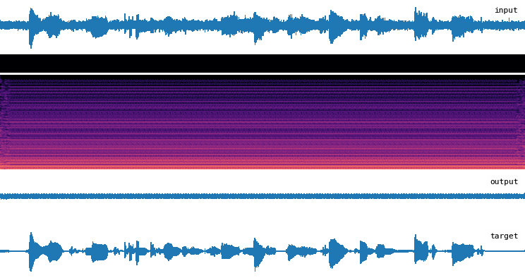

addse
Code for "Absorbing Discrete Diffusion for Speech Enhancement".

Installation
-
Install uv
-
Clone the repository and install dependencies:
Data preparation
Training data
The following datasets are used:
- Speech: EARS, LibriSpeech, VCTK, DNS5, MLS_URGENT_2025_track1
- Noise: WHAM_48kHz, DEMAND, FSD50K, DNS, FMA_medium
Place each dataset under data/external/. Then run the following scripts:
This converts the data to an optimized format for litdata and writes it in data/chunks/.
Alternatively, update the two shell scripts to use your own speech and noise data.
Validation data
Validation data is directly streamed from Hugging Face. No need to prepare anything.
Alternatively, update the configuration files in configs/ to use your own litdata-optimized validation data.
Evaluation data
Download the Clarity speech dataset to data/external/Clarity/. Then run:
The remaining evaluation data is directly streamed from Hugging Face.
Alternatively, update the configuration files in configs/ to use your own litdata-optimized evaluation data.
Training
To train a model:
Checkpoints and metrics are written to logs/<model_name>/.
You can use the --wandb option to log metrics to W&B, and the --log_model option to additionally upload checkpoints to W&B, after configuring a .env with your credentials.
Evaluation
To evaluate a trained model:
uv run addse eval configs/<model_name>.yaml logs/<model_name>/checkpoints/last.ckpt --num-consumers 4
The results are written in eval.db by default.
Trained checkpoints
Trained checkpoints can be downloaded from Hugging Face. For example:
wget https://huggingface.co/philgzl/addse/resolve/main/nac.ckpt
wget https://huggingface.co/philgzl/addse/resolve/main/addse-m.ckpt
Example code to encode and decode audio with the neural audio codec:
import soundfile as sf
import soxr
import torch
import torch.nn.functional as F
import yaml
from hydra.utils import instantiate
from addse.lightning import NACLightningModule
torch.set_grad_enabled(False)
cfg_path = "configs/nac.yaml"
ckpt_path = "nac.ckpt"
audio_path = "libri-tut_000000_noisy.wav"
device = "cuda"
# Load model
with open(cfg_path) as f:
cfg = yaml.safe_load(f)
lm: NACLightningModule = instantiate(cfg["lm"]).to(device)
ckpt = torch.load(ckpt_path, map_location=device)
lm.load_state_dict(ckpt["state_dict"], strict=False)
lm.eval()
# Load input audio
x, fs = sf.read(audio_path, dtype="float32", always_2d=True)
assert x.shape[1] == 1, "Only mono audio is supported"
x = soxr.resample(x, fs, 16000)
x = torch.from_numpy(x.T).unsqueeze(0).to(device)
# RMS-normalize for best results
rms = x.pow(2).mean().sqrt()
x = x / rms
# Pad to multiple of downsampling factor
padding = (lm.generator.downsampling_factor - x.shape[-1]) % lm.generator.downsampling_factor
x = F.pad(x, (0, padding))
# Get discrete codes from audio
codes, _ = lm.generator.encode(x)
# Get audio from discrete codes
x_rec = lm.generator.decode(codes).squeeze(0)
# Rescale to original RMS
x_rec = x_rec * rms
Example code to enhance speech with ADDSE:
import soundfile as sf
import soxr
import torch
import yaml
from hydra.utils import instantiate
from addse.lightning import ADDSELightningModule
torch.set_grad_enabled(False)
addse_cfg = "configs/addse-m.yaml"
addse_ckpt = "addse-m.ckpt"
nac_cfg = "configs/nac.yaml"
nac_ckpt = "nac.ckpt"
audio_path = "libri-tut_000000_noisy.wav"
device = "cuda"
# Load model
with open(addse_cfg) as f:
cfg = yaml.safe_load(f)
lm: ADDSELightningModule = instantiate(cfg["lm"], nac_cfg=nac_cfg, nac_ckpt=nac_ckpt).to(device)
ckpt = torch.load(addse_ckpt, map_location=device)
lm.load_state_dict(ckpt["state_dict"], strict=False)
lm.eval()
# Load input audio
x, fs = sf.read(audio_path, dtype="float32", always_2d=True)
assert x.shape[1] == 1, "Only mono audio is supported"
x = soxr.resample(x, fs, 16000)
x = torch.from_numpy(x.T).unsqueeze(0).to(device)
# RMS-normalize for best results
rms = x.pow(2).mean().sqrt()
x = x / rms
# Enhance audio
x_enh = lm(x).squeeze(0)
# Rescale to original RMS
x_enh = x_enh * rms